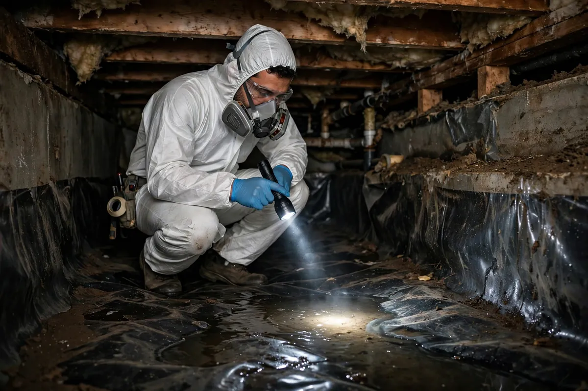

Crawl Space Water Cleanup in Hollywood, FL
The crawl space is the part of the house nobody looks at until something goes wrong — which is exactly why water problems there go unnoticed for so long. Standing water under the home, saturated soil, and humidity rising into the floor system can quietly damage joists, subflooring, and insulation for months. Crawl space water cleanup in Hollywood, FL means working in tight, dark, damp quarters to extract water, dry the structure, and stop the moisture that's been feeding the whole house from below.

Understanding Crawl Space Water Cleanup in Hollywood
Water gets into crawl spaces through poor exterior grading, gutter downspouts that discharge at the foundation, plumbing leaks in the floor system above, and — in Hollywood's climate — groundwater pressure during heavy rain periods. Once inside, it doesn't leave on its own: enclosed crawl spaces trap humidity, and the soil beneath stays wet long after the rain stops. Fiberglass insulation between joists sags when wet and holds moisture against the wood; vapor barriers, where they exist, often end up with water sitting on top of them instead of beneath.
The damage pattern is distinctive. Floor joists and sill plates absorb moisture from below, which can lead to wood decay over time if the space stays damp. Musty odors in the living space often trace back to a wet crawl space, since air moves upward through the floor assembly. Ductwork running through the space can sweat and drip, adding to the problem. Because access is limited — often just a small hatch — assessment relies on moisture meters, inspection cameras, and someone willing to suit up and go in.
How We Handle the Job
Access comes first: we establish safe entry, lighting, and ventilation for the confined work area. Standing water is extracted with portable pumps and wet vacuums suited to tight quarters. Wet insulation is removed — it does not recover — and debris blocking airflow comes out. Then the drying strategy fits the space: high-capacity dehumidification, targeted air movement under the floor system, and sometimes a focused drying setup for severely saturated sections. Joists and subflooring get direct moisture readings, not estimates from the doorway.
Wood moisture content is tracked until joists and subflooring return to acceptable levels — surface dryness means nothing if the core of a joist is still wet. We also identify the water's entry path, whether grading, downspouts, or plumbing, and note it in the documentation, because drying without addressing the source guarantees a repeat. Related services such as emergency water extraction, structural drying, and flood cleanup often connect to the same loss depending on conditions on site.
Local Response and Insurance Support
Searching for crawl space water cleanup near me usually means you need help without delay. We answer emergency calls around the clock. Documentation — photos and moisture readings — supports conversations with your insurance carrier when the loss is sudden and accidental. We do not decide coverage; we provide clear technical information about the work performed.
When to Call
Call if you have active water, wet materials that are not drying, odors after a leak, or a backup that may involve contaminated water. Early action in Hollywood’s climate is almost always less disruptive than waiting. For neighborhood-specific service, see our service areas. For the full list of capabilities, visit all services.
Frequently Asked Questions
How do I know if there's water in my crawl space?
Musty odors inside the home, unexplained humidity, sagging insulation visible through the access hatch, or standing water you can spot with a flashlight are the usual signs. Many homeowners discover it during a termite inspection or when a musty smell won't go away. If your home has a crawl space and you've had heavy rain or a plumbing leak, it's worth a look.
Can you work in such a tight space?
Yes — that's the job. Technicians use protective gear, portable lighting, and compact extraction and drying equipment designed for confined areas. Very low clearances can limit what equipment fits, which the assessment will determine. It's uncomfortable work, but it's routine for water damage professionals.
Will drying the crawl space fix the musty smell upstairs?
If the crawl space is the source, yes — once the water is extracted, wet materials removed, and wood moisture returns to normal, the odor source is gone. But if the smell has also gotten into HVAC ductwork or living-space materials, those may need attention too. Eliminating the source comes first; then we assess what remains.
Should I have a vapor barrier installed afterward?
A vapor barrier helps manage ground moisture, but it's a separate improvement from water cleanup — and it won't fix intrusion from grading, gutters, or plumbing. Get the space dry and the entry path identified first. Then a qualified contractor can advise whether a barrier, drainage work, or dehumidification makes sense as a next step.